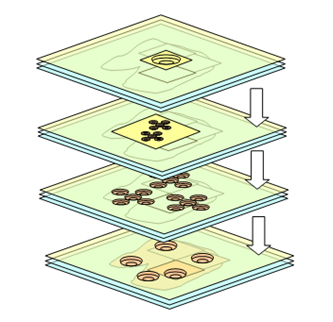

Layers

Layers are the building blocks of large graphics representing equipment, floors, buildings, facilities and entire campuses. Each layer of a graphic represents a grouping of graphical elements or system objects and has a unique name. Layers are combined and organized in different ways to create all the required views at a page level.
Each time you create a new graphic, a layer is automatically generated and displays in the Element Tree view. When you select a layer from the Element Tree, the layer properties also display in the Properties view. Anytime you add or import an element or image, you are adding it to the active layer. Additionally, every time you create a new layer, it is automatically added to the Depths view, as a column entry that can be associated with a specific depth. Elements can be copied and pasted from one layer to another layer.
Grouping Layers
To add more complexity to a graphic representing a facility, equipment, building for example, you can add further detail by also associating a grouping of layers with a depth.
Alarm Category and Discipline Properties
Layers can be assigned to an alarm category and also associated to pre-defined disciplines. This facilitates dynamic filtering of layers when a graphic is viewed in the Graphics Viewer. If you do not want to assign a layer to a discipline, you can select the Any option, and the layer always displays. The discipline for a layer is assigned in the Properties view, under the Layer properties.
Layer Visibility Range
Layers can have a visibility range so that they are only visible within a specific zoom factor range. As you zoom in or out, the layer will become visible depending on the current zoom factor.
Semi-Transparent Layers
Each layer can have a background color associated with it. The color of the background is chosen using the Background property of the Colors category. If a semi-transparent color is used, the elements on the layer are visible. If a non-transparent color is used, the elements on the layer are not visible.
Layers in the Element Tree View
The Element Tree View allows you to work with depths and layers to create complex graphics that represent your site or building facility.
The Element Tree displays all the layers, associated drawing elements of the selected graphic or symbol, and allows you to add or delete layers from the active graphic. Elements within a layer are ordered using the positioning arrows at the bottom of the Element Tree View.
Within the Element Tree, you can also decide which layers, depths, or elements to display in Runtime or Design mode.
Creating, Inserting, and Merging Layers
You can create, name, rename, and delete layers in the Element Tree View, as well as insert one or more layers at a time. Each time you create a new depth; a new layer is created and associated with the new depth. Multiple layers can also be merged, resulting in a target layer absorbing all the elements in the order of the selected layers. The order of selection determines the z-order of the merged graphic elements. Elements of the first selected layer have a lower z-order than elements from a later selected layer.
Filtering and Sorting Layers
You can filter the list of layers associated with the graphic in the Element Tree View by name or by z-order. You can use the navigational arrows at the bottom of the Element Tree View to establish the z-order of layers.
Viewing and Visibility of Layers
The Element Tree View provides you with several options for viewing and previewing a graphics layers on the open canvas. When Visible is checked, the layer is visible in Design, Test, and Runtime mode. If not checked, the layer is not visible on the canvas in any mode. This is useful if you want to isolate one or more layers on the canvas without viewing all the layers in the graphic. The Use check box determines the use of a layer in Runtime mode. If checked, the layer is active and visible in Runtime mode. If unchecked, the layer displays in both Design and Test mode, but not in Runtime mode.
To preview each layer, select the Hover check box and move your mouse over a layer to reveal the layer and its associated elements on the open canvas.
Locking Layers
You can lock all the elements of a layer by selecting Lock. However, a locked layer does not allow you to select any graphic elements.
Displaying Elements
The Element Tree allows you to either show or hide all the elements associated with the layers, using Show All Elements .
.
Copying Elements
You can copy elements and graphical objects from one or more layers and paste them on a different layer selected from the Select Layer drop-down menu in the Element Tree.
Related Topics
For related procedures, see the following: